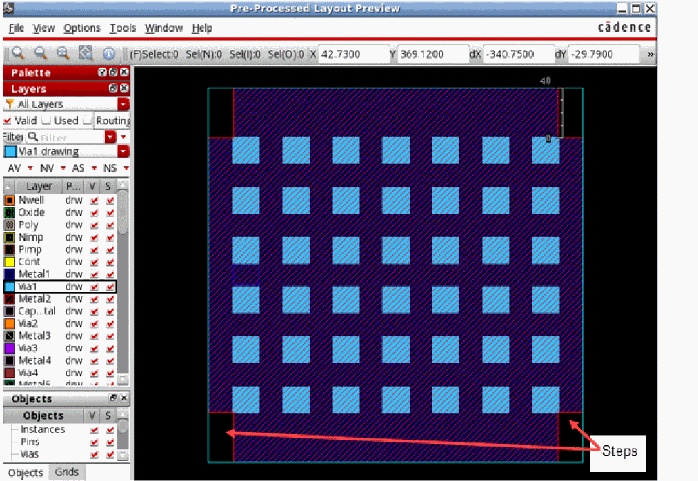

Specifying Options to Smooth Shape Steps
If you created rules to stripe the shapes, you can smoothen out small steps or edges that remain after that. This also helps in reducing the number of unknowns in the layout.
To add a new rule to smooth a shape:
- From the Lpp drop-down list, select the layer-purpose pair for the shapes to be considered.
- Specify the minimum allowed step size in the Step Size field.
-
Click Add to create a rule.
All the steps with size less than the given limit are smoothened.
Consider the following example of a layout. After the shapes on a metal layer are merged, there are steps remaining in all four corners.

You can measure the size of steps and add a rule to smoothen them out. After smoothing, the example layout appears as shown below.
Related Topics
Protecting Layout Objects from Shape Simplification
Previewing Pre-Processed Layout
Return to top